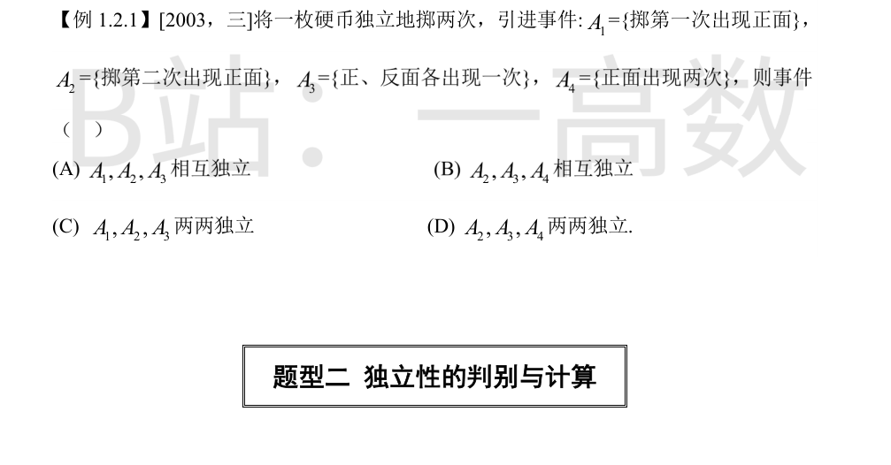
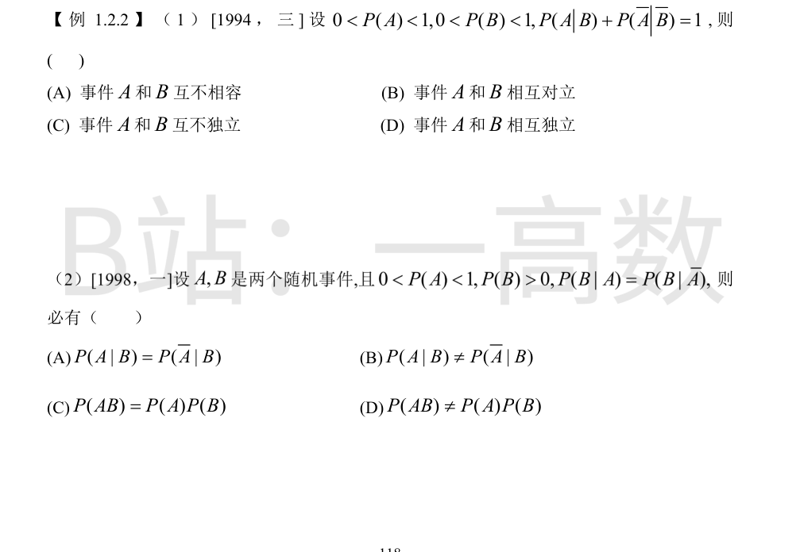
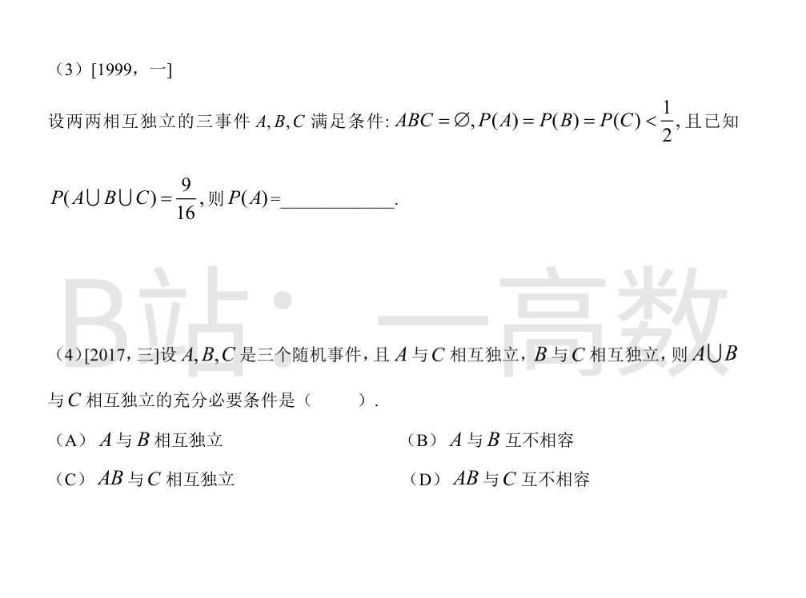
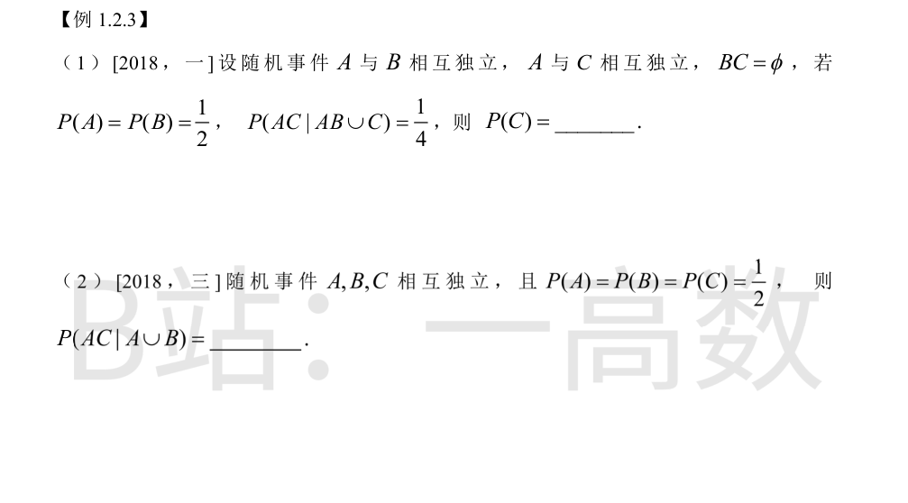

样本空间 Ω={正正,正反,反正,反反}，每点概率 1/4。$P(A_1)=P(A_2)=P(A_3)=\tfrac12$，$P(A_4)=\tfrac14$。
$$P(A_1A_2)=\tfrac14=P(A_1)P(A_2),\quad P(A_1A_3)=\tfrac14=P(A_1)P(A_3),\quad P(A_2A_3)=\tfrac14=P(A_2)P(A_3)$$
故 $A_1,A_2,A_3$ 两两独立；但 $A_1A_2A_3=A_3\cap A_1A_2=\varnothing$，$P=0\neq\tfrac18$，不相互独立，排除 (A)，选 (C)。
对含 $A_4$ 的组合：$A_2A_4=A_4$（正正⊂第二次正面），$P(A_2A_4)=\tfrac14\neq\tfrac18=P(A_2)P(A_4)$，故 $A_2,A_3,A_4$ 连两两独立都不成立，排除 (B)(D)。


由 $P(\bar A\,|\,\bar B)=1-P(A\,|\,\bar B)$，条件化为 $P(A|B)=P(A|\bar B)$，即 $B$ 发生与否不影响 $A$ 的概率。验证：
$$\frac{P(AB)}{P(B)}=\frac{P(A\bar B)}{P(\bar B)}\Rightarrow P(AB)(1-P(B))=(P(A)-P(AB))P(B)\Rightarrow P(AB)=P(A)P(B)$$
故 $A,B$ 相互独立，选 (D)。（独立与互不相容/对立一般不相容：$0<P(A),P(B)<1$ 时互不相容必不独立。）
$P(B|A)=P(B|\bar A)$ 即
$$\frac{P(AB)}{P(A)}=\frac{P(\bar AB)}{P(\bar A)}\Rightarrow P(AB)(1-P(A))=P(A)(P(B)-P(AB))$$
展开得 $P(AB)=P(A)P(B)$，故选 (C)。另外由 $P(A|B)=\frac{P(AB)}{P(B)}=P(A)$、$P(\bar A|B)=1-P(A)$，(A)(B) 均不能确定必成立或必不成立（取决于 $P(A)$ 是否为 1/2）。
设 $P(A)=P(B)=P(C)=p$。两两独立且 $ABC=\varnothing$，由加法公式
$$P(A\cup B\cup C)=3p-3p^2=\frac{9}{16}\Rightarrow 16p^2-16p+3=0$$
$$p=\frac{16\pm\sqrt{256-192}}{32}=\frac{16\pm 8}{32}\quad\Rightarrow\quad p=\frac34\ \text{或}\ p=\frac14$$
由 $p<\tfrac12$ 舍去 $\tfrac34$，故 $P(A)=\tfrac14$。
由 $A,C$ 独立、$B,C$ 独立：
$$P((A\cup B)C)=P(AC\cup BC)=P(AC)+P(BC)-P(ABC)=P(C)[P(A)+P(B)]-P(ABC)$$
$$P(A\cup B)P(C)=[P(A)+P(B)-P(AB)]P(C)$$
两式相等的充要条件是 $P(ABC)=P(AB)P(C)$，即 $AB$ 与 $C$ 相互独立，选 (C)。（若 $A,B$ 互不相容且 $P(AB)=0$，还需 $P(ABC)=0$ 自动成立，但 (B) 并非必要；题问充要条件，只有 (C)。）

分子：$AC\cap(AB\cup C)=ABC\cup AC=AC$（因 $ABC\subset AC$），故 $P(AC\cap(AB\cup C))=P(AC)=P(A)P(C)=\tfrac12 P(C)$。
分母：$AB\cap C\subset BC=\varnothing$，故
$$P(AB\cup C)=P(AB)+P(C)=P(A)P(B)+P(C)=\frac14+P(C)$$
代入条件概率：
$$\frac{\tfrac12 P(C)}{\tfrac14+P(C)}=\frac14\Rightarrow \frac12 P(C)=\frac{1}{16}+\frac14 P(C)\Rightarrow \frac14 P(C)=\frac{1}{16}\Rightarrow P(C)=\frac14$$
$AC\cap(A\cup B)=AC\cup ABC=AC$（$ABC\subset AC$），故分子 $P(AC)=P(A)P(C)=\tfrac14$。
$$P(A\cup B)=P(A)+P(B)-P(AB)=\frac12+\frac12-\frac14=\frac34$$
$$P(AC\mid A\cup B)=\frac{1/4}{3/4}=\frac13$$